<article class="docs-article">
    <section class="docs-section" id="iPaas">
        <div>
            <h1>iPaaS (Integration Platform as a Service):</h1>
            <hr>
            <p>
                iPaaS is a cloud-based platform that facilitates data integration between different applications and systems across an
                organization.It provides tools and services to enable the development, execution, and governance of integration flows connecting
                various cloud-based and on-premises systems.
            </p>
            <!-- Workato -->
            <p>
                We rely on Workato as our chosen IPaaS provider. Workato provides an integration and automation platform designed to
                help businesses connect their diverse range of applications and automate workflows, all without the need for extensive
                coding expertise. This document outlines the implementation of IPaaS within the FormsFlow application.
            </p>

            <h3>Exploring the Integration UI</h3>
            <p>
                The Integration section has three tabs: Recipes, Connected Apps, and Library.
                <ol>
                    <li><strong>Recipe</strong> :Create and manage integration workflows using Recipe Editor.</li>
                    <li><strong>Connected Apps</strong> :Connect preferred applications and services to streamline automation processes.</li>
                    <li><strong>Library</strong> :Access pre-built recipes and integrations from the Workato community, saving time in setting up workflows.</li>
                </ol>
                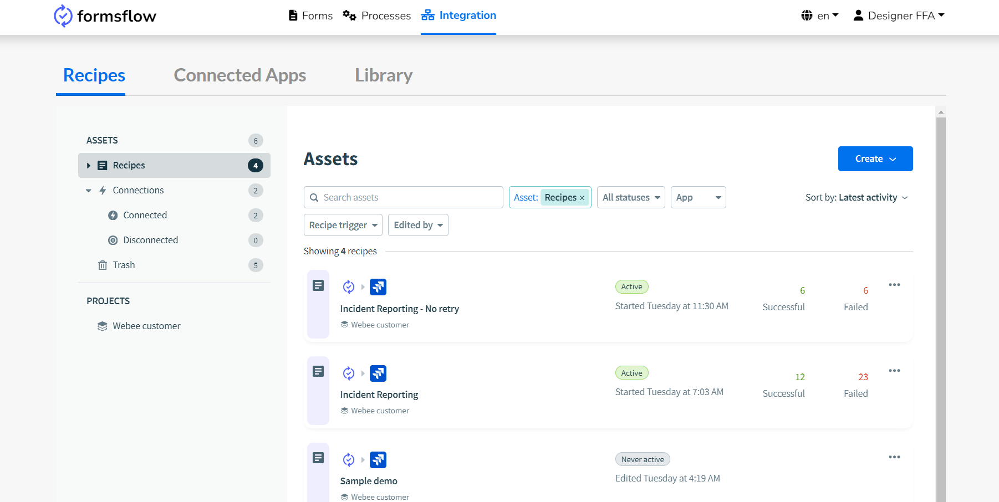<br><br>
            </p>
            <h5>Sample Use case</h5>
            <p>
                In this example scenario, our objective is to develop a recipe for integrating Jira and FormsFlow applications. This
                integration will empower users to generate Jira issues directly from form submissions, leveraging the capabilities of
                Workato. Let's proceed by detailing the sequential steps involved:
            </p>
            <h3>Step 1 : Form design </h3>
            <p>Design a form with essential fields key fields, such as incident date, description, and summary, all vital for
            initiating a JIRA ticket. The below form will be utilized to trigger a recipe.</p>
            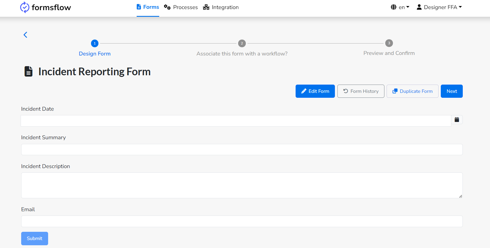<br><br> 

            <h3>Step 2. Recipe creation</h3>
            <h4>i) Connecting apps to be used in recipe creation</h4>
            <p>To begin creating a recipe, it's necessary to establish connections between the relevant applications using the
            'Connection' tab.</p>
            <ul>
                <li>
                    Go to “Connected Apps” tab, click on “Create” button , then click on connection.
                    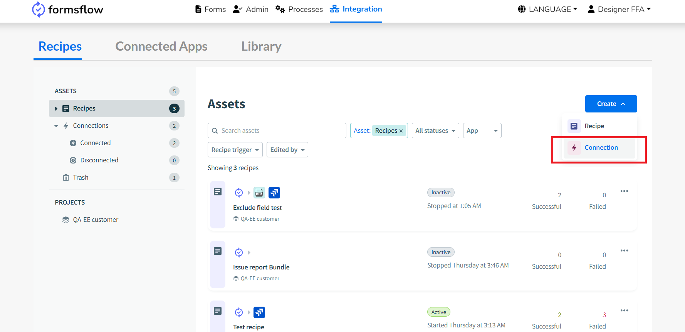<br><br>
                </li>
                <li>
                    Please search and select the FormsFlow application. Once selected, provide the connection name, location, and relevant
                    authentication details such as Client ID, Client Secret, API Base URL, etc.
                </li>
                <li>
                    Click on Connect to ensure the connection is set up properly.
                    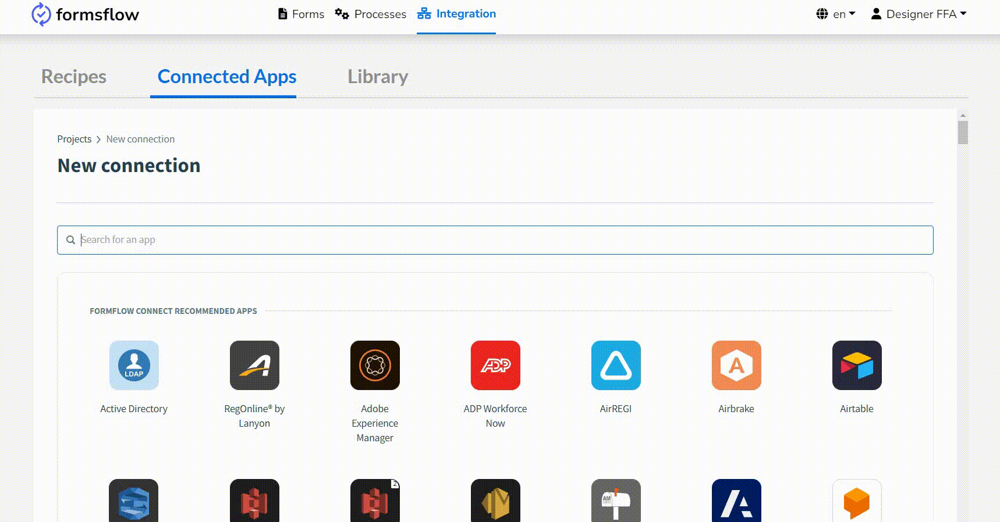<br><br>
                </li>
            </ul>
            <p><strong>Note</strong>: <i>Contact administration to get authentication details</i></p>
            <h4>ii)Build your recipe</h4>
            <ul>
                <li>
                    Create a new recipe: Navigate to the "Recipes" tab and click on "Create." Then select "Recipe" to start building a new
                    recipe.
                </li>
                <li>Name and assign location: Give your recipe a descriptive name that reflects its purpose for easy identification later
                on. Assign it to a location that aligns with its function or the team responsible for managing it.</li>
                <li>
                    Select a starting point:For integrating with formsflow, select the forms flow connector as the starting point .
                </li>
                <li>
                    Begin building your recipe: Once you've selected a starting point, you can begin building your recipe. Customize it
                    according to your needs using the options provided by Workato.
                </li>
                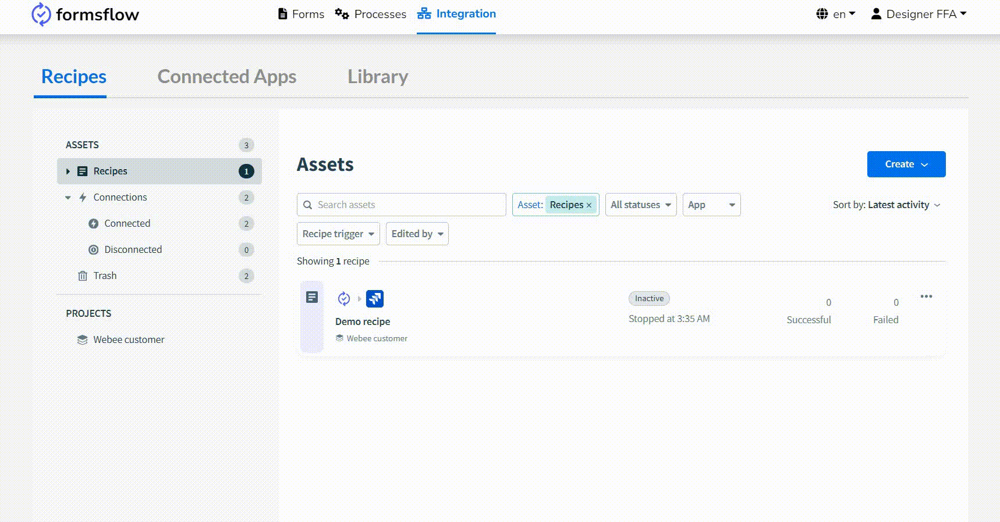<br><br>
            </ul>
            <p><strong>Note</strong> : <i>Do note that leaving a recipe name blank will result in the creation of a name that is based on the triggers and
            actions which comprise the recipe</i>.</p>

            <ul>
                <li>
                    Click on the '+ ‘and then you can see our interface is divided into two sections: the left side showcases the recipe
                    workflow, while the right side facilitates trigger and action configuration.
                </li>
                <li>
                    Select "formsflow" from the connected apps displayed on the right side.
                </li>
                <li>
                    Choose your form within the "formsflow" section(Incident Reporting form).
                </li>
                <li>
                    Assign a unique event name to your selected form.
                </li>
                <li>
                    Finally, save the recipe to preserve your configurations.
                </li>
                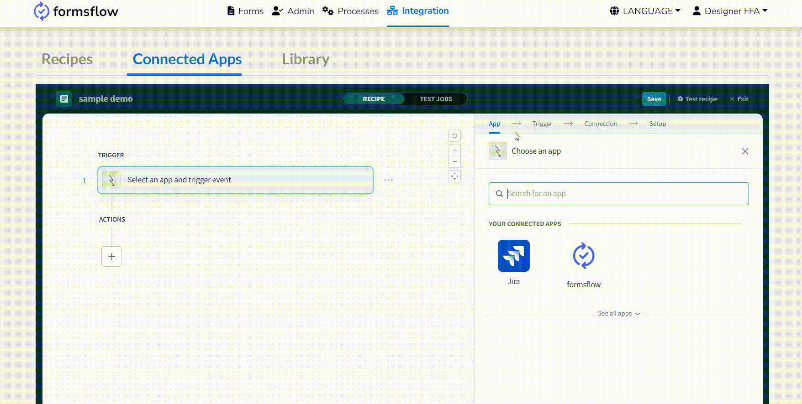<br><br>
            </ul>
            <h4>iii) Configuring actions</h4>
            <p>To utilize the action buttons, start by selecting the desired app and action. Any app supported by our integration system
            can be connected through this interface.</p>
            <ul>
                <li>
                    Click on the "Add Action" button to incorporate an action into your recipe.
                </li>
                <li>
                    Select Jira as the app for the action. You'll then be presented with a list of available actions within Jira.
                </li>
                <li>
                    Choose "Create Issue" from the list and proceed to configure the action fields using datapills. These datapills allow
                    you to dynamically populate fields such as issue type, summary, description, assignee, and priority, ensuring accurate
                    and efficient data transfer between your connected apps.
                </li>
                <li>
                    Once you've completed the setup, save the action to finalize the configuration.
                </li>
                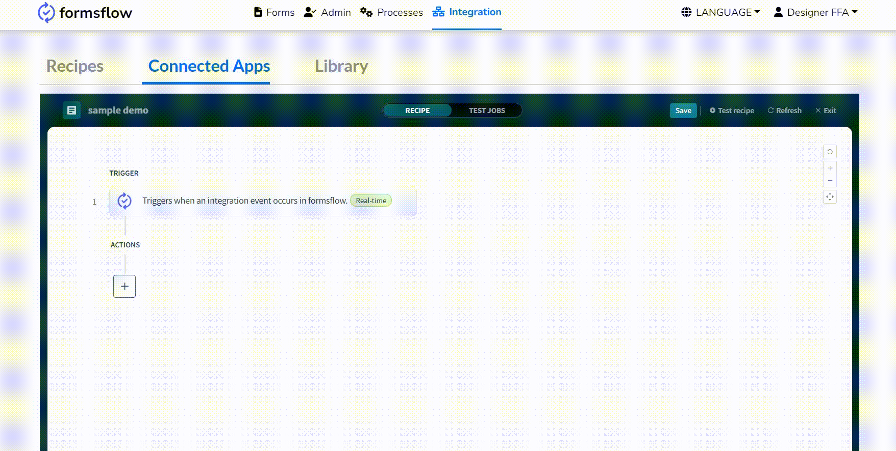<br><br>
                <li>
                    Finally, map the payload and callback suffix datapill for returning the data to Formsflow.
                </li>
                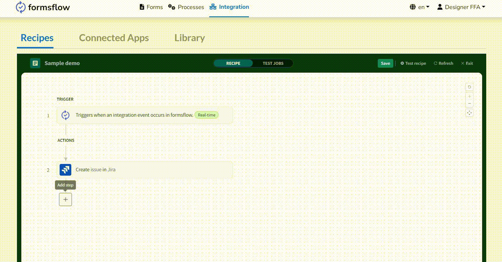<br><br>
            </ul>
            <h4>iv)Initiate the Recipe</h4>
            <ul>
                <li>
                    Once all the above steps are completed,user can start recipe by clicking on the "Start Recipe" button located in the
                    Recipe Editor
                </li>
                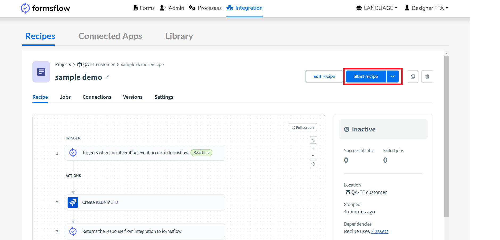<br><br>
                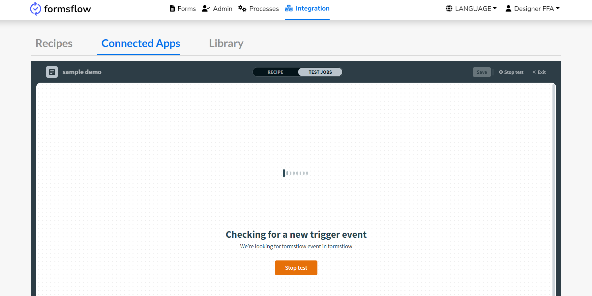<br><br>
            </ul>
            <h3>Step 3 : Workflow </h3>
            <ul>
                <li>
                    Add the event name and make sure to use the same <strong><i>event name</i></strong> that you previously used during the initial recipe creation
                    to ensure consistency with the workflow.
                </li>
                <li>
                    Go to the "Select recipe" drop-down menu and choose the currently active recipe.
                </li>
                <li>
                    If you want to exclude any form fields, add them under the exclude fields section.
                </li>
            </ul>
            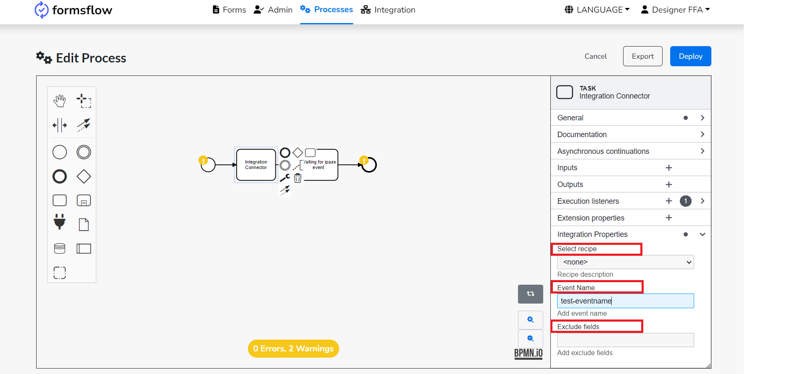<br><br>
            <p>Finally, complete the process by submitting the incident reporting form .</p>

            <p>After submitting the form, you'll notice the recipe gets triggered and displays details in the Jobs
            section.Additionally, a new ticket will be generated in Jira containing the submitted issue summary and description.</p>
    </section>